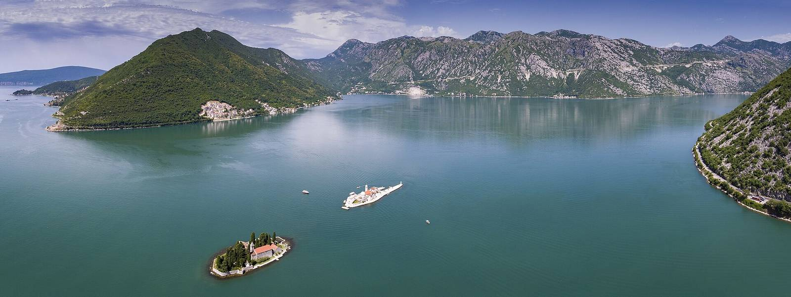
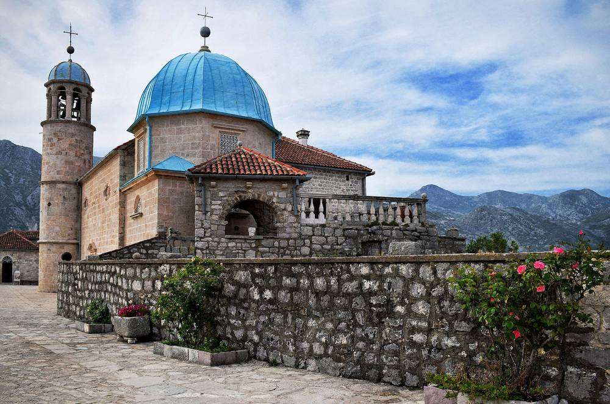
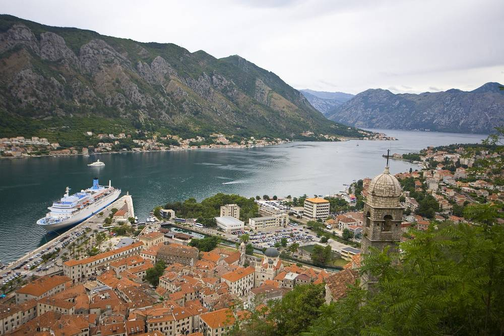
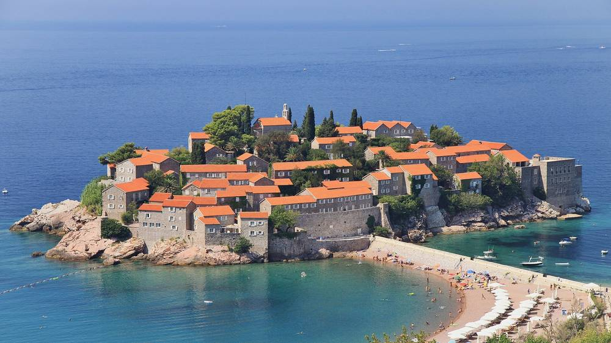

Montenegro: vijf dagen baai, bergen en luxe voor rond €2.000
Vijf dagen rond Hemelvaart. Fjordachtige baai, bergweg naar Lovćen en een eilanddorp als ansichtkaart.
De luxeste versie die rond €2.000 voor 2 personen past. Twee nachten in een gerestaureerd kapiteinspaleis in Perast (9,4, ontbijt 'exceptional'), daarna twee nachten in Katamare aan de Budva Riviera (9,5 uit 1.406 reviews, 3 zwembaden en spa). Heen rechtstreeks vanaf Rotterdam The Hague Airport.
Gallery



.jpg){kind=link}



.jpg){kind=link}
Wat het kost
- Vluchten (4 enkele reizen)€648
- Handbagage-upgrade Transavia (schatting)€60
- Transfer DBV naar Perast (schatting)€117
- Huurauto 2 dagen + one-way + brandstof (schatting)€130
- Leon Coronato, 2 nachten€399,60
- Katamare, 2 nachten€277,10
- Vaste kosten voor 2 personen€1.631,70
Eten, entrees, boten en taxi's voor 2, 4 dagen (schatting). Budget: konobas en lokale vis, taxiboot naar het eiland, vestingmuren en mausoleum. Comfort: plus halve dag boottocht naar de Blue Cave, wijnproeverij en twee goede diners. Luxury: privé-speedboot, fine dining en spa. Reis van huis naar de vertrekluchthaven is niet meegerekend.
Flights
Tivat heeft op deze data geen bruikbare vlucht vanuit Nederland; Dubrovnik heen is veruit het beste (Transavia €107). Zondag terug is lastig: KLM DBV-AMS direct kost €559, Croatia via Zagreb 13:05 €268. Goedkoper: wo 5 tot za 8 mei, Transavia beide kanten direct (terug DBV 18:35, RTM 21:00) voor €107 + €166 p.p., 1 nacht korter.
The Stay
Heritage Hotel Leon Coronato, Perast
9,4Kapiteinspaleis aan de waterkant van Perast, locatie 9,8, ontbijt 'exceptional'. De boot naar Onze-Lieve-Vrouw van de Rotsen vertrekt om de hoek.
- Standard Double Room, 22 m², ontbijt inbegrepen
- €399,60 voor 2 nachten, 2 personen · €344 + 15% btw + €1 toeristenbelasting p.p.p.n. (nu 32% korting op €506)
- Gratis annuleren tot 30 apr 2027, betalen in het hotel
- Check-in 14:00 tot 23:00, check-out tot 11:00
Katamare Hotel, Pržno (Budva Riviera)
9,5Bij het strand, 3 km van Sveti Stefan. Drie zwembaden, spa en een ontbijt dat gasten 'superb' noemen. Hoogste reviewscore met zoveel reviews in de buurt.
- Superior Double Room, 30 m², balkon, ontbijt inbegrepen
- €277,10 voor 2 nachten, 2 personen · €234 + 15% btw + €1 destination tax en €1 toeristenbelasting p.p.p.n. (nu 21% korting op €295)
- Gratis annuleren tot 23 apr 2027
- Check-in vanaf 15:00, check-out tot 11:00
In plaats van Leon Coronato: aan het water met binnenzwembad en spa, €685,95 voor 2 nachten incl. ontbijt, btw en toeristenbelasting, gratis annuleren tot 28 apr 2027. €286,35 meer. Goedkoper kan ook: Hotel Admiral in Perast (9,2, zeezicht) €283,45, dus €116,15 minder. Bekijk op Booking.com
Getting there
- Dubrovnik Airport naar Perast: privétransfer €117 per auto (richtprijs CheapestTaxis, ca. 1u15 incl. grens Kroatië-Montenegro)
- Huurauto vr 7 tot zo 9 mei, ophalen in Kotor, inleveren Podgorica Airport: ca. €15 tot €25 per dag plus €30 tot €60 one-way (richtprijzen, niet live gecontroleerd)
- Landing 09:05, check-in Leon Coronato vanaf 14:00: bagage droppen en lunchen aan het water. Katamare: check-in vanaf 15:00, check-out tot 11:00, vlucht 13:30 vanaf Podgorica (ca. 1 uur rijden, schatting).
Het weekend
- Wo 5 mei
Aankomst in Perast
09:05 landen in Dubrovnik, transfer langs de kust en over de grens. Lunch aan het water, check-in 14:00. Middag met de taxiboot naar Onze-Lieve-Vrouw van de Rotsen, zonsondergang op de kade.
- Do 6 mei (Hemelvaart)
Kotor en de Blue Cave
Vroeg de vestingmuren van Kotor op voor het uitzicht over de baai, daarna de oude stad. Middag boottocht door de baai naar de Blue Cave. Avond diner in Perast.
- Vr 7 mei
Bergweg naar Lovćen
Huurauto ophalen in Kotor, de serpentineweg omhoog naar Njeguši (rauwe ham en kaas), Njegoš-mausoleum op Lovćen, door naar Cetinje. Rond 16:00 check-in Katamare, zwembad.
- Za 8 mei
Sveti Stefan en Budva
Ochtend het uitzicht op Sveti Stefan en het strand, middag de oude stad van Budva. Wijnproeverij, laatste diner aan zee.
- Zo 9 mei
Terug
Ontbijt, check-out 11:00, ca. 1 uur naar Podgorica, auto inleveren. 13:30 vlucht via Warschau, 18:50 Schiphol.
Pablo-score 8,6
- Prijs-kwaliteit 25%8,0
- Hotel 25%9,0
- Bestemming 20%9,5
- Reisgemak 15%7,0
- Activiteiten 10%9,5
- Uniek 5%8,5
Sterk
- Vijf dagen rond Hemelvaart en Bevrijdingsdag
- Twee hotels met 9,4 en 9,5, allebei met ontbijt
- Baai van Kotor, Lovćen en Sveti Stefan in één reis
Minder sterk
- Terug met overstap in Warschau en vanaf een ander vliegveld
- Mei: zee nog fris en kans op buien
- €2.000 lukt alleen met Budget-uitgaven; Comfort komt ca. €214 hoger uit
Past op €2.000 als je slim eet. Wil je echte vijfsterren in Perast, reken €286 extra voor Heritage Grand. Boek vroeg: beide hotels geven nu korting en zijn gratis annuleerbaar tot eind april.PabloAlle gedeelde trips